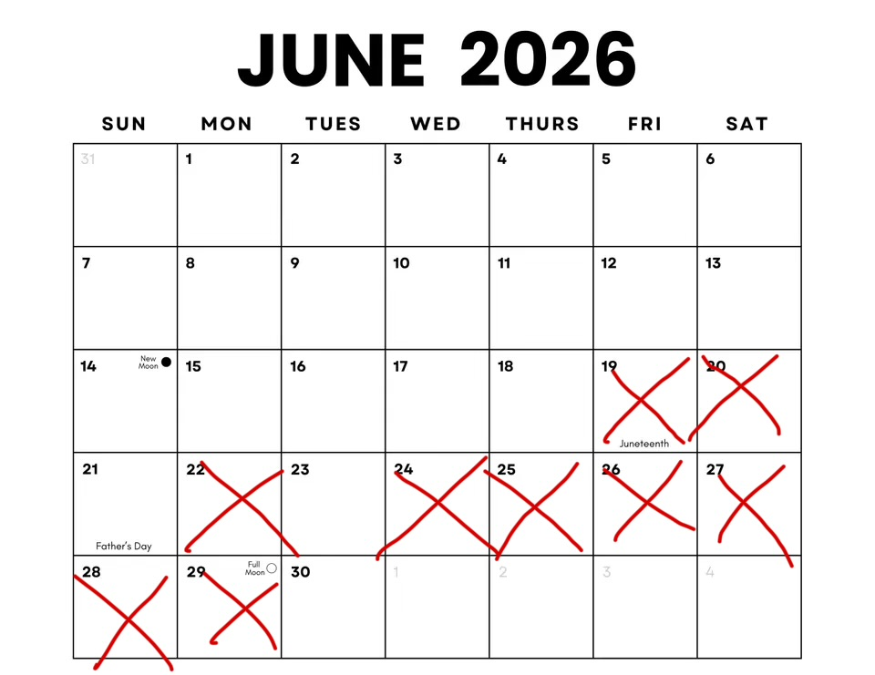

Living on a high floor with BOTH lifts out of action for two weeks is more than an inconvenience. We are trapped in a high-rise walk-up during a heatwave.
Whether you are struggling to carry shopping, moving in / out, or trying to manage kids and prams, this is highly unacceptable.
🪷 Below are some healthy advice 🧘♀️
Your tenancy contract is with your private landlord, not Hadrian Property Management. Legally, your landlord cannot shrug and blame block management. Under Section 11 of the Landlord and Tenant Act 1985, your landlord is directly responsible for ensuring you have safe, functioning access to the flat you are paying rent for.
Under the Homes (Fitness for Human Habitation) Act 2018, a property has to be safe and liveable. Forcing families, pet owners, or anyone to climb up 20 floors in a heatwave introduces massive health and safety risks. This is a direct breach of your legal right to Quiet Enjoyment of your home.
You are paying 100% rent for a high-rise flat with 0% lift access. You have a legal right to ask your landlord for a formal rent reduction for every day these lifts are down due to "Loss of Amenity."
Note: Keep paying your normal rent so you don't enter arrears, but formally demand the discount from your landlord/agent in writing.
If your landlord or Hadrian won't move quickly, Salford City Council's Private Rented Housing Team (Environmental Health) can step in. They have the legal power to inspect Millennium Tower and hit the freeholders with emergency Improvement Notices and massive fines if they keep treating a high-rise crisis like a slow paperwork issue.

Hadrian🤡 has been waiting on a quote for almost a week. Let’s make sure every single landlord in this building gets the message.